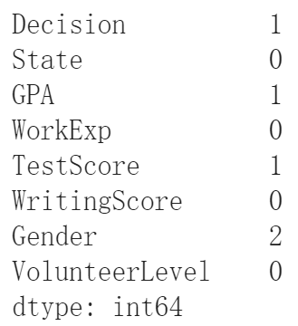

Porject Title
Source
Github PageIntroduction
University application is an important process for every students who want to get admitted. Universities require a lot of information in applications such as personal information of applicants, academic performance, wokring experience and etc. Each university places different emphasis on each factor. Some universities consider the academic performance as the most important quality and some universities focus on comprehensive skills. In the current time, university application especialy for graduate school becomes more and more competitive which makes finding out qualified applicants difficult. Thus, understanding what factors the university cares about become very important for determining appropriate applicants. The goal of our project is to analyze factors that may influence admission decisions using summer admission data of a univeristy. We think our analysis can help the university in two aspects. First, the admission offfice can understand if there is any bias in admission process. Second, the university can have a clear understanding about quality they are searching for applicants.
Data Cleaning
The original data is synthesized, so it doesn't represent any real situations. In our analysis, we assume the data is collected from the admission office. It contains 88 admission results and applicants' information in 8 features, including
Decision: admission decision (Admit, Waitlist or Decline)
State: state for applicants
GPA: grade point average on a 4.0 scale
WorkExp: working experience measured in years
TestScore: test score on a 1000 scale
WritingScore: writing score on a 100 scale
Gender: gender of the applicant (0 or 1)
Volunteer: measure how many volunteer work the applicant done (0 to 5)

Missing Values
|
The dataset contains 5 missing values. The Decision column has one missing value; GPA has 1; Testscore has 1; Gender has 2. Missing values in quantitative data including GPA and Testscore are filled with the mean of the corresponding column. Missing values in qualatative data including Decision and Gender are filled with the mode of the corresponding column. |

Number of missing values in each feature
|
Error Values
Decision
One applicant has decision of "Banna". This is an obvious error values. This applicant has high GPA, test score and writing score, so we guess the applicant is likely to be admiited. Thus, we change the "Banna" to "Admit".

State
Some state names are in lower case in the original data. We capitalize the first letter of all states.
GPA
The 4.0 GPA scale should have values between 0.0 and 4.0. One applicant has GPA of 6.0 which is outside the normal range. We use the mean of GPA to replace this error value.
WorkExp
One applicant has 100 years work experience which is obviously impossible. We use the mean of WorkExp to replace this error value.

Gender
One applicant has gender of -1 while the gender should only has 0 or 1. We use the mode of Gender to replace this error value.
Other features including TestScore, WritingScore and VolunteerLevel has no error values. After dealing missing values and correcting error values, the data looks like the following.

Factor Analysis
1. Volunteer Level
Extracurricular activities is an important part in university applications. These activities can demonstrate applicants' interest and knowledge beyond the regular coursework. The admission office can understand applicants' personality and comprehensive skills through extracurricular activities. Although almost all universities require such activities, they place different emphasis on activities. In this section, we use volunteer level as an example of extracurricular activities to analyze how it affects admission decisions in the university.
The visulization shows number of volunteer levels by admission. The number of each volunteer level is similar for admitted applicants. This means the university attempts to keep volunteer level balanced. We think the university has no preference for a specific volunteer level. However, this doesn't mean the admission rate is the same for every volunteer level. For example, 50% of applicants with volunteer level 0 are admitted, but only 1/3 of applicants with volunteer level 1 are admitted. This difference is caused by the gap between the number of volunteer level 0 and 1. The volunteer level 0 has 12 applicants and level 1 has 18. To keep volunteer level balanced, the university has to decline more applicants with level 1. The minority level should has higher admission rate than the majority level. However, this conclusion is useless for applicants because they have no information about the volunteer level distribution for all applicants, so they don't know if thy are in the minority level.
2. State
In this section, we want to determine if the state bias exists in the admission process. We analyze admission rates for each state to study if admission decisions are influenced by state.
From the plot above, we can visualize that california has the highest number of student acceptances while Mississipi has the lowest. It is worth mentioning that in some students from New York, Georgia, Vermont, Oregon and etc only have one student that applied to college therefore some students were either rejected or waitlisted. Therefore, we cannot make a definitive statement about whether states affect admission rates, because many states have very few applicants.
3. Work Experience
In this section, we investigate how work experience affects admission decisions by analyzing the average work experience by states and admission decisions.
This plot shows how an applicant's work experience and state can influence their admission decision. As seen in the plot, some states such as California have more applicants than other states due to the lack of applicants from certain states. By analyzing the admitted students, we can observe that students from California with 2.86 years of work experience were accepted followed up by Florida whose students had 1.6 years of work expereince, colorado students who had 1.46 years of work experience, and finally Utah students with 1.2 years of worth of experience. For waitlisted students, applicants from Florida with 2.52 years of work experience are waitlisted followed up with students from California and Colorado with nearly 1.88 years of work experience and Utah with 1.37 years of experience.
To conclude, We can't say that a person with more work experience has a higher chance of getting admitted. Multiple factors are taken before a student gets admitted. For example, a student from Mississippi who has 6.2 years of work experience was rejected but this could be the applicant not satisfying other criterias such as GPA/Test score.
5. Gender
In this section, we investigate how gender affects admission decisions to determine if the university has gender bias in admissions.
From the above plot, we see that for every decision category, the number of males (i.e. considering code 1 as male and other as females) is higher. Therefore, we can conclude that overall the applicants pool contained a majority of male students. We can also see that gender 1 is 33% more of the gender 0 in decision categories 'ADMIT' and 'DECLINE' which means that a gender of a person is not necessary influencing in decision.
We see the distribituion of gender among different states. Florida leads the count followed by Colorado and California. Most of the other states just had 1 applicant with the exception of Utah and Virginia.